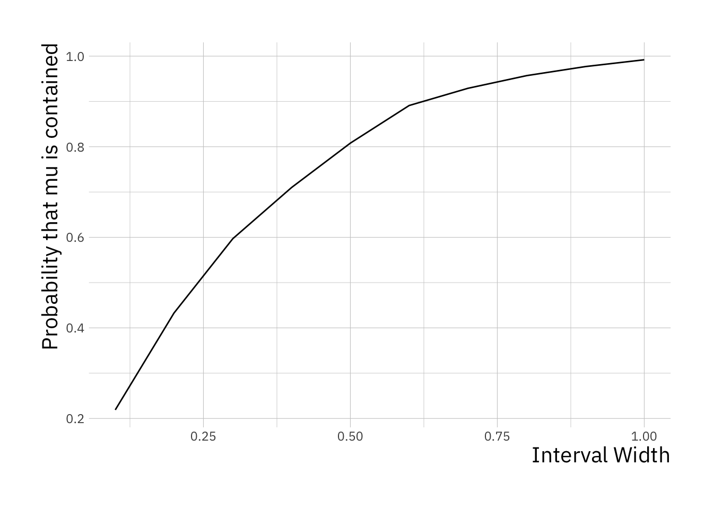

9 Confidence Intervals
In this practical, you will learn how to derive confidence intervals for a particular problem using Monte Carlo simulations.
In a random experiment, a sample of data is collected from which we can estimate a population parameter of interest. This estimate can either be a point estimate or an interval estimate - a range of values.
A confidence interval is an interval estimate which has an associated confidence level. The confidence level tells us the probability that the procedure that is used to construct the confidence interval will result in the interval containing the true population parameter. It is not the probability that the population parameter lies in the range.
This is a very counter-intuitive concept which we shall now illustrate in this exercise.
9.1 Setup
First, create a new R script within Rstudio then we will start with some code preamble. We will use the package ggplot2 for plotting.
library(ggplot2)Use install.packages("ggplot2") in the console window if the package is not installed on your system.
Lets define the width of an interval, we will set this to 1 initially but we will change this later on:
interval_width = 1 # width of confidence interval9.2 Simulating data
We are now going to generate some simulated data for our experiment. We will create 30 samples from a Normal distribution with mean 2.5 and variance 1. These are true values of the population parameters. In a real experiment, we would not know these values but using simulated data, we obviously control these.
Let define these first:
# number of data points to generate
n <- 30
# population mean
mu <- 2.5
# population standard deviation (square root of population variance)
sigma <- 1.0Now, we generate some normally distributed data using the R function rnorm,
# generate n values from the Normal distribution N(mu, sigma)
x <- rnorm(n, mean = mu, sd = sigma)We now have 30 samples from a Normal distribution with population mean 2.5 and variance 1.
9.3 Constructing the confidence interval
We are going to pretend that we do not know the population mean value (2.5) used to generate this dataset and try to provide an interval estimate for it from the simulated sample data.
Remember, from lectures, that the sample mean \(\bar{x}\) is a natural point estimate for the population mean \(\mu\).
x_bar = mean(x) # compute sample meanso a suitable interval might be centred on the sample mean and extend out,
interval <- c(x_bar - interval_width / 2, x_bar + interval_width / 2)Let’s look at this interval:
print(interval)## [1] 1.959777 2.959777Q: Does the confidence interval contain the true parameter?
9.4 Experiment
The previous experiment only examined one simulated dataset so we cannot fully understand the probabilistic interpretation of the confidence interval just yet. At the moment, the interval you have calculated will either contain the population mean or not.
In order to understand the probabilistic interpretation, we will need to generate many data sets, construct confidence intervals as we have for each and then see across all generated data sets, how often those intervals cover the true population mean.
For a Monte Carlo simulation, we will need many repeats of the simulation. Lets define the number of repeats to be used:
nreps <- 1000 # number of Monte Carlo simulation runsWe will use 1000 simulations initially to make the code quick to run but you may want to make this higher later on for greater accuracy.
Now, let us define a series of interval widths to simultaneously test,
# define a series of interval widths
interval_width <- seq(0.1, 1.0, 0.1)
# store the number of interval widths generated
n_interval_widths <- length(interval_width)This creates a sequence of values from 0.1 to 1.0 in steps of 0.1 in the vector interval_width:
print(interval_width)## [1] 0.1 0.2 0.3 0.4 0.5 0.6 0.7 0.8 0.9 1.0Now, we will create a vector of zeros of the same length. We will use this to store the number of times that a confidence interval of those specific widths contain the true population mean
# create a vector to store the number of times the population mean is contained
mu_contained <- rep(0, n_interval_widths)The hard work now begins. We use a for loop to repeat the simulation nreps times. Within each loop, we will simulate a new data set, compute a sample mean and then check if the confidence interval contains the true population mean. Since we are using more than one confidence width, we use a second for loop to cycle through the different widths.
for (replicate in 1:nreps) {
x <- sigma * rnorm(n) + mu # simulate a data set
xbar <- mean(x) # compute the sample mean
# for each interval width that we are testing ...
for (j in 1:n_interval_widths) {
# check if the interval contains the true mean
if ((mu > xbar - 0.5 * interval_width[j]) &
(mu < xbar + 0.5 * interval_width[j])) {
# if it is, we increment the count by one for this width
mu_contained[j] <- mu_contained[j] + 1
}
}
}We can now calculate, for each width, an estimate of the probability that a confidence interval of that width will contain the population mean.
probability_mean_contained <- mu_contained / nrepsLet’s use ggplot2 to plot this relationship,
# create a data frame containing the variables we wish to plot
df <- data.frame(interval_width = interval_width,
probability_mean_contained = probability_mean_contained)
# initialise the ggplot
plt <- ggplot(df, aes(x = interval_width, y = probability_mean_contained))
# create a line plot
plt <- plt + geom_line()
# add a horizontal axis label
plt <- plt + xlab("Interval Width")
# create a vertical axis label
plt <- plt + ylab("Probability that mu is contained")
print(plt) # plot to screen
Can you see that an interval width of \(0.6\times (\bar{x} \pm 0.3)\) gives a confidence interval close to 90% probability of containing the population mean?
Remember from the lectures that we saw that the theory says \(\bar{x} \pm 1.65\,\frac{\sigma}{\sqrt{n}}\) gives a 90% confidence interval?
So, if we compute \(2 \pm 1.65\, \frac{\sigma}{\sqrt{n}}\), what do we get?
print(2 * 1.65 * sigma / sqrt(n))## [1] 0.6024948The Monte Carlo estimate matches up with the theory!
9.5 Problem: Confidence Interval
Can you devise a way to compute a confidence interval for the population variance?
You can make use of the following as a point estimate of the sample variance:
\[ s^2 = \frac{1}{n - 1}\sum_{i = 1}^n (x - \bar{x})^2 \]
which can be calculated using the sd function in R.